A psychology-backed extension for Canvas that meets students at the exact moment they start avoiding an assignment, and gets them moving with one small first step.
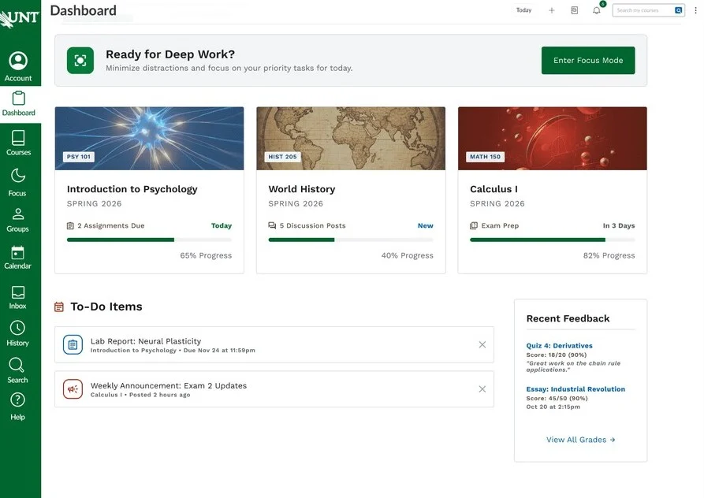
Most productivity tools treat procrastination as a scheduling problem. My research kept pointing somewhere else: students avoid work when a task makes them anxious, and that anxiety peaks a few days after an assignment is posted, when the page is still blank and the instructions still feel vague.
I set out to design something that shows up at that moment instead of after it. Canvas Focus Mode lives inside the learning platform students already open every day. It asks what is in the way, then responds with the right kind of help: a five-minute first action, a broken-down plan, or a gentle interruption when a perfectionist starts rewriting the same paragraph for the fourth time.
I started with secondary research so I could walk into interviews with sharper questions. Three frameworks shaped everything after: Temporal Motivation Theory, Affect Regulation Theory, and Implementation Intentions. Read together, they describe procrastination as a short-term mood repair. Students put a task off because doing so makes them feel better right now.
of college students procrastinate
do it chronically
of productivity apps are abandoned within 30 days
That last number reframed the brief. Students do download tools that promise to help. They quit them because opening one more app adds friction at the exact moment they are already looking for an exit.
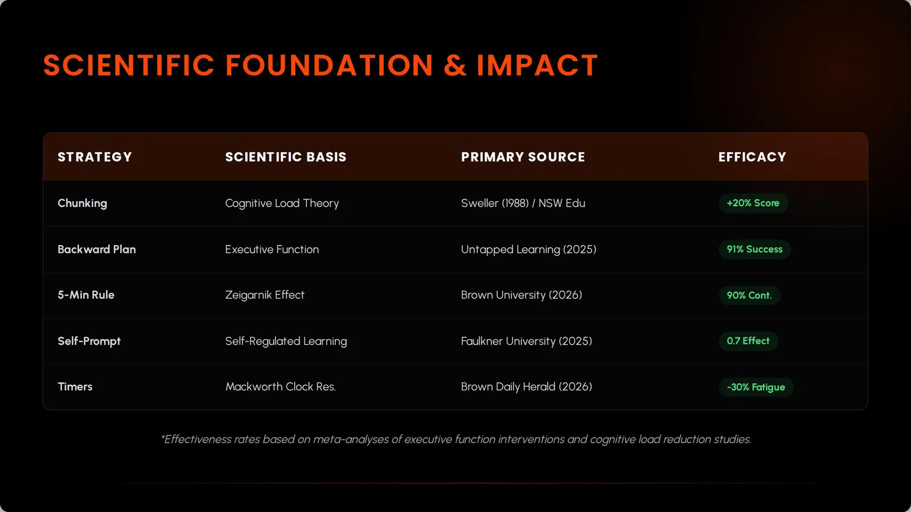
I reviewed Forest, Todoist, and Notion, the tools students in my interviews mentioned most. All three are good at organizing work once a student has decided to do it. None of them notice when a student opens an assignment, reads it, and closes the tab.
I also mapped the stakeholders around a struggling student: professors, academic advisors, and the Canvas platform itself. Professors and advisors care about outcomes but usually step in after a student has already fallen behind. That left an early window nobody was designing for, and Canvas, with more than 30 million students already logging in, was the natural place to reach it.
Interviews with college students broke my assumption that there was one cause to fix. Three patterns kept repeating, and each needed a different response. That became the main design principle: diagnose before you prescribe.
Rewrites the same paragraph endlessly and compares her drafts to published work. She needs a real-time nudge when she starts spiraling, and permission to let a first draft be rough.
Works 25 hours a week on top of five courses and often doesn’t know where to start. He needs the assignment cut into smaller pieces, with progress he can actually see.
Will spend two hours color-coding a plan before writing a sentence. More structure makes her worse. She needs something simple that gets her moving.
I mapped a typical assignment from the day it is posted to the night it is due. The emotional line was remarkably consistent: confidence at the start, a slide into anxiety once the blank page sets in, a low point of avoidance, and a rushed scramble at the end.
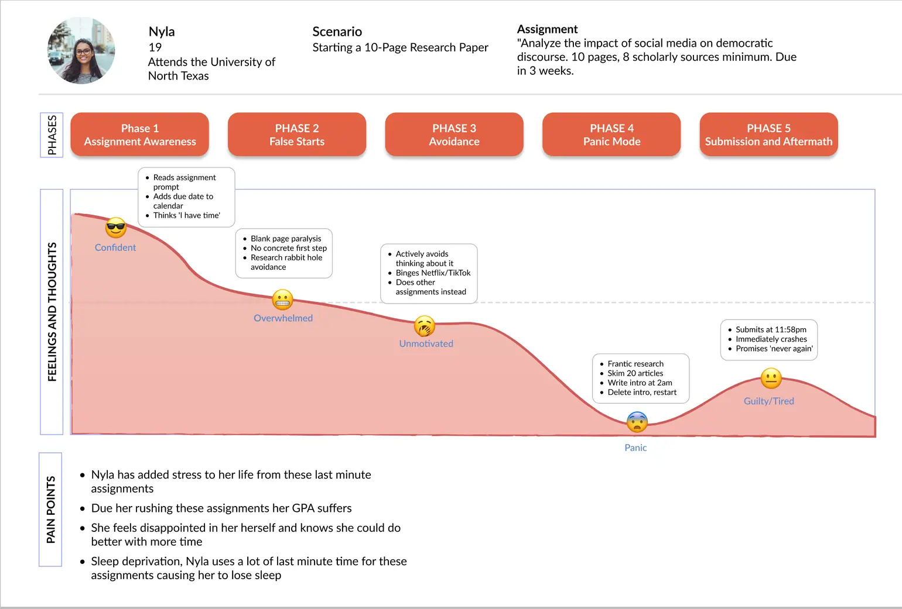
The most useful thing the map gave me was a target. Instead of trying to help across the whole timeline, I designed the intervention to catch students in that mid-journey dip, before avoidance hardens into a deadline panic.
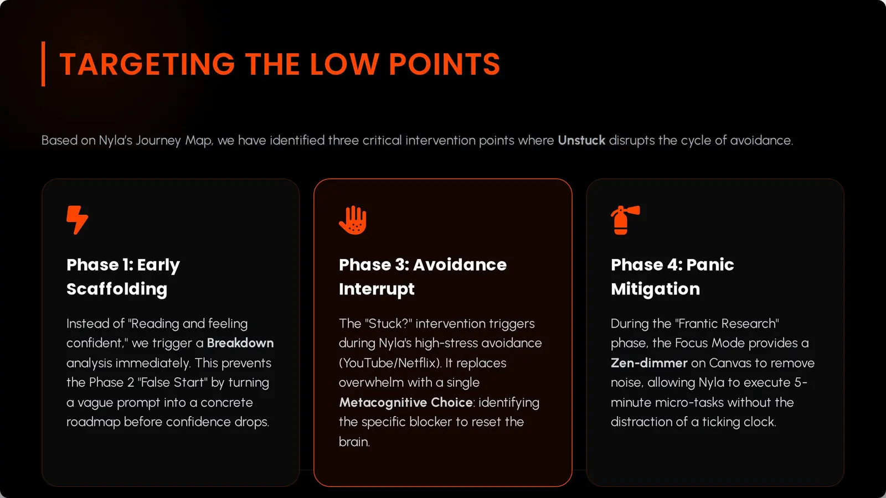
I translated the research into five design pillars, each tied to a specific behavior I wanted to change. Every feature in the product had to trace back to one of them.
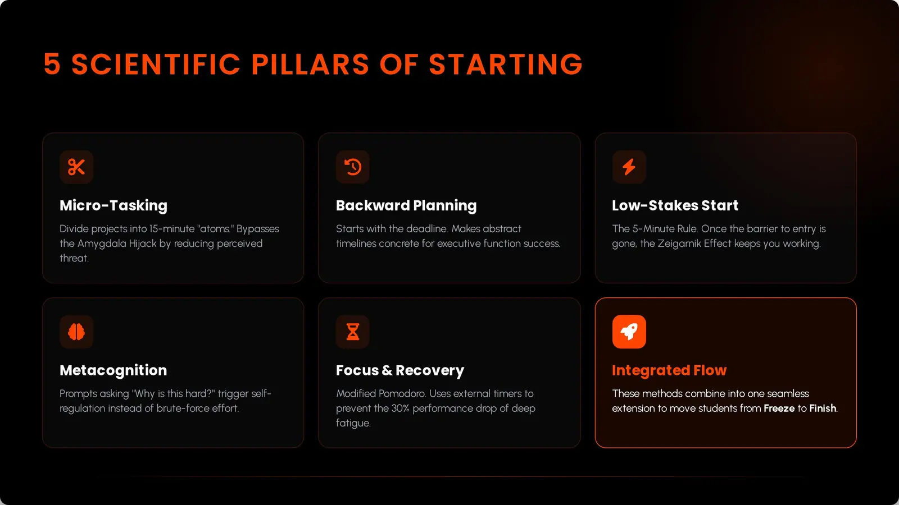
“What’s blocking you?” comes before any suggestion. Diagnosis before prescription.
“Brain-dump three things you already know” instead of “write a 10-page paper.”
10 to 12 micro-steps with time estimates, so progress becomes visible.
Notices revision loops as they happen and redirects the student back to drafting.
Uses deadlines and grade history to make nudges specific instead of generic.
Early sketches focused on the check-in. The hardest part was asking “what’s blocking you?” without it reading like a therapy intake form or a guilt trip. I explored tone as carefully as layout.
I wireframed the check-in, the task breakdown, and the perfectionism interruption in Figma before moving to high fidelity. The visual language borrows from Canvas so the feature feels native, with a calm, low-alarm palette and plain, friendly copy. It should feel like a nudge from a study partner, not another notification.
Focus Mode lives inside Canvas, so there is no second app to open at the moment a student is looking for an exit.
The home screen replaces a wall of assignments with today’s next few steps.
Diagnosis comes first. The same assignment needs a different first step for a different kind of stuck.
The plan becomes a short roadmap with a timer, so starting never means facing the whole paper.
When a student moves into their writing, a small panel comes with them.
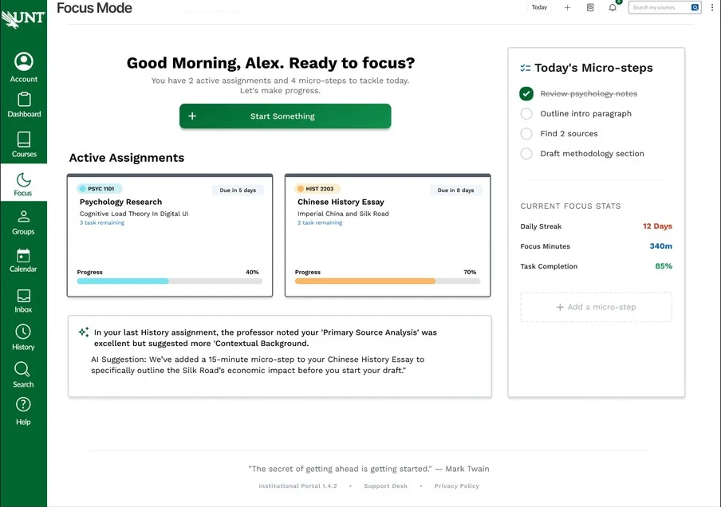
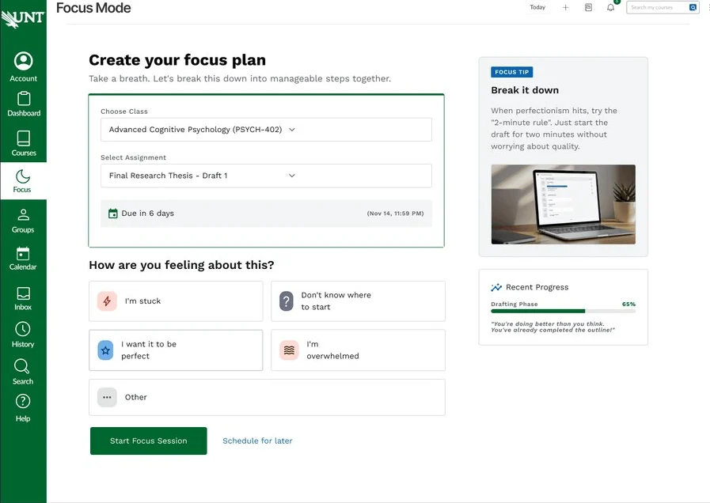
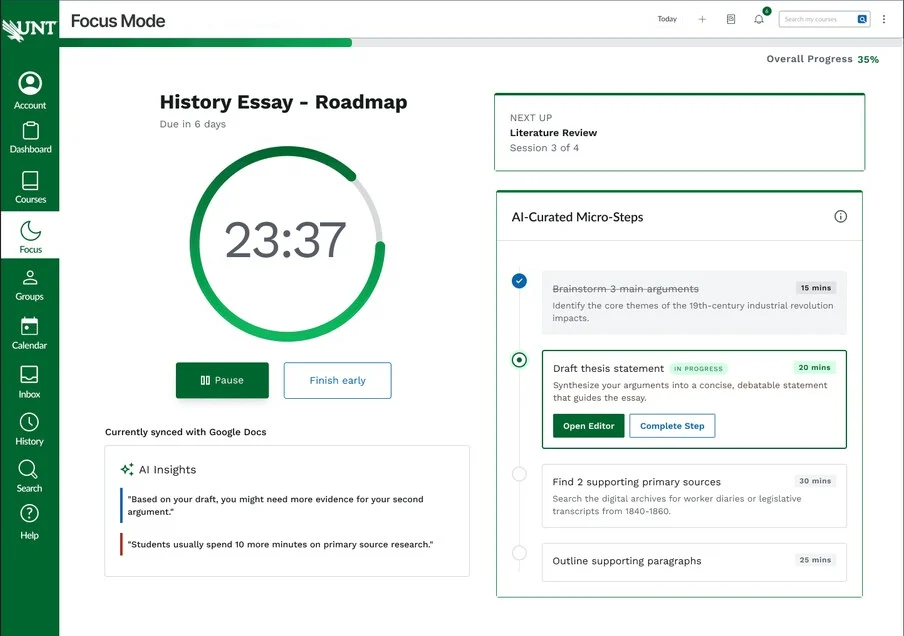
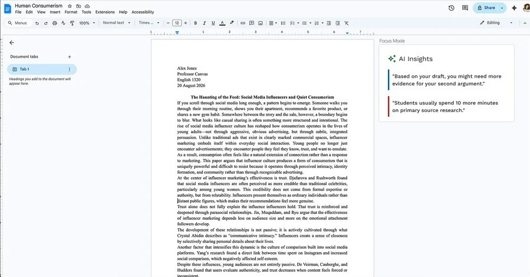
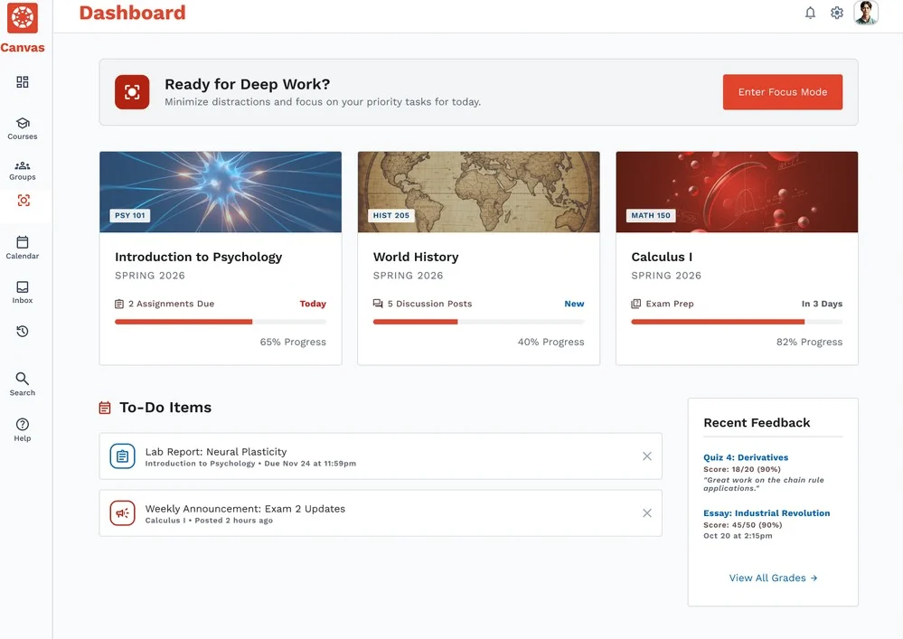
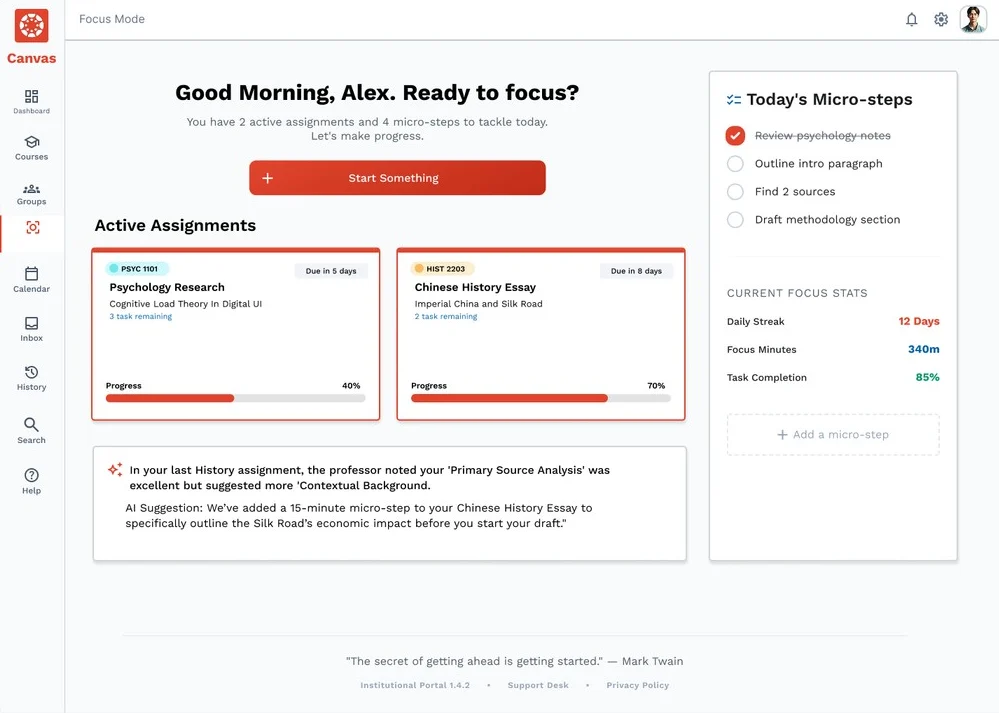
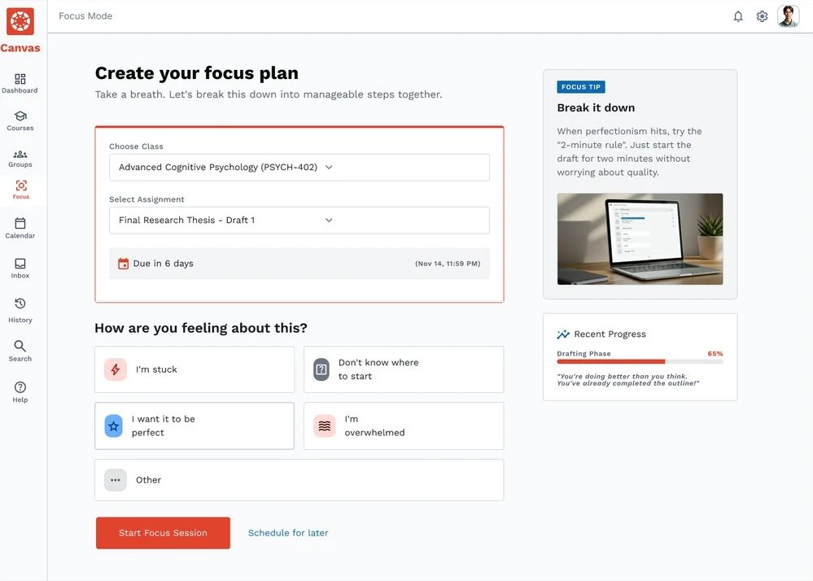
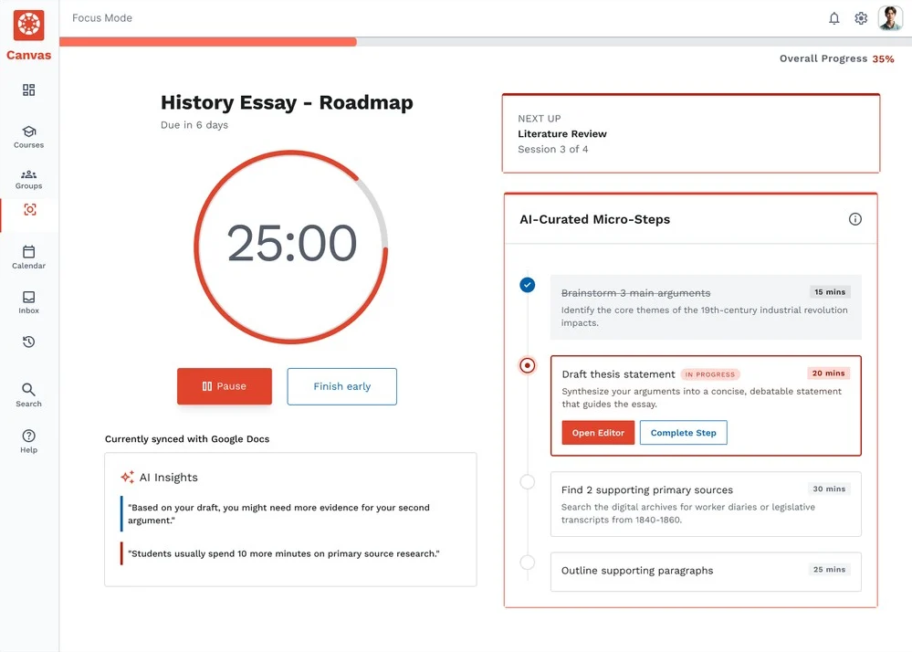
Before testing, I ran a heuristic evaluation focused on visibility of system status and user control. The biggest risk was that the tool would feel naggy or controlling. Then I put the clickable prototype in front of six college students.
said they would use it
System Usability Scale score
favorite features: first actions & progress tracking
The first version of the perfectionism blocker read like a warning, close to “stop revising.” Participants found it scolding. I rewrote it as “Your goal is to write something, not something perfect,” and softened the visual treatment from an alert to an inline card. I also added privacy-first data handling and made every notification optional.
This project changed how I scope problems. Procrastination isn’t fixed with a better calendar. It’s eased by lowering the emotional cost of starting, then building momentum with small, concrete wins the student can see.
Next, I would run a longer diary study to see whether students keep using Focus Mode after the novelty fades, and test whether instructors would want an opt-in view of anonymized class-wide sticking points.